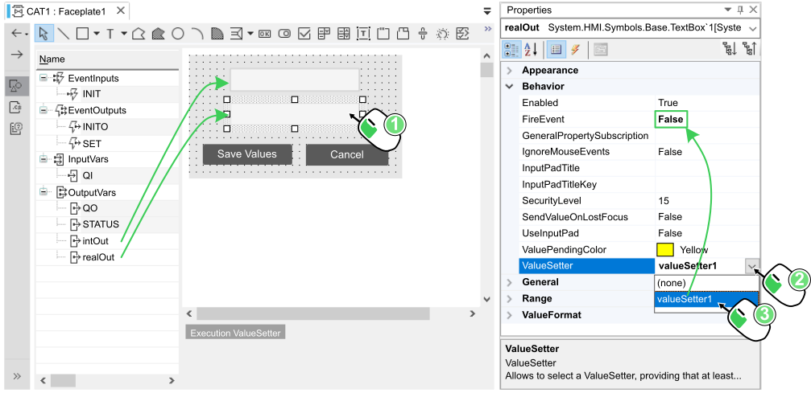
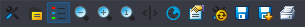
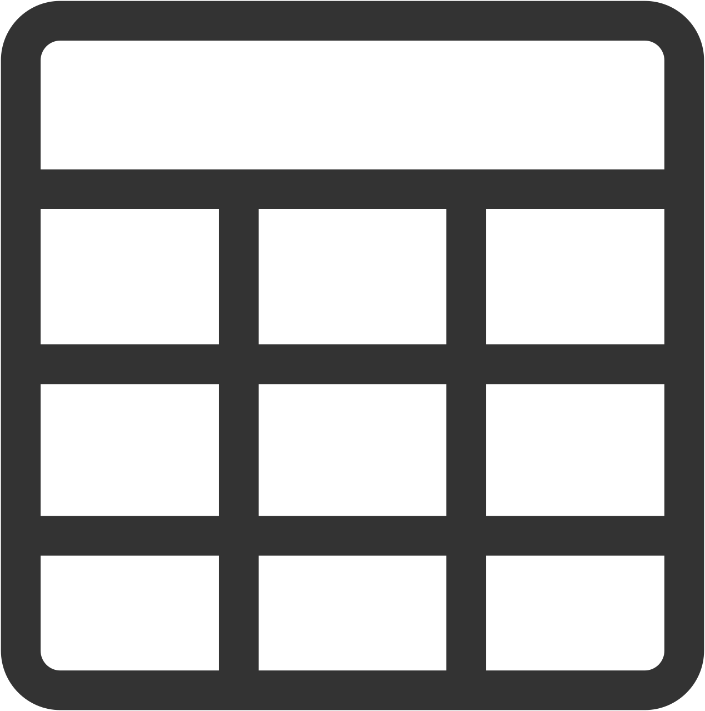
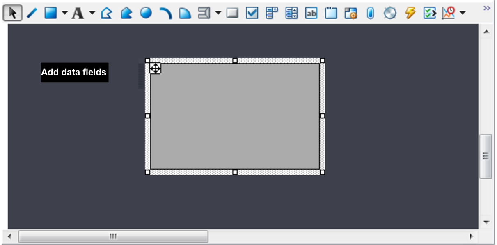
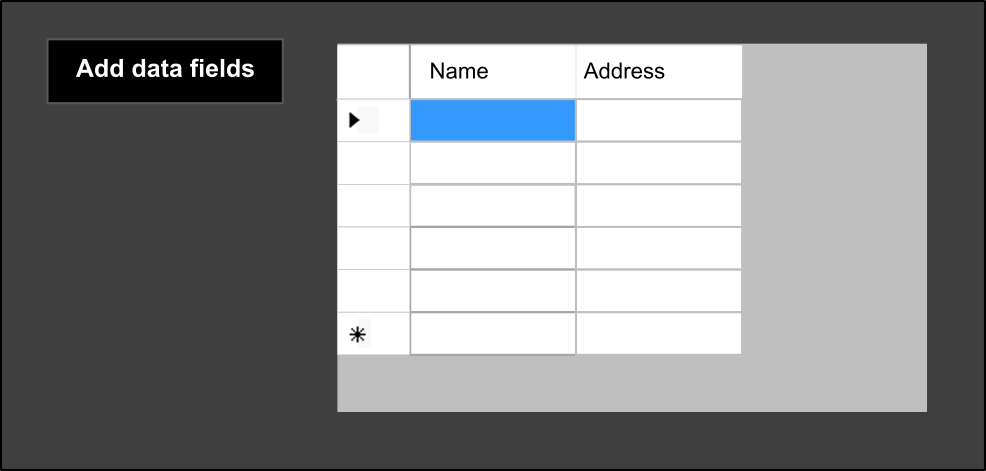
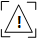
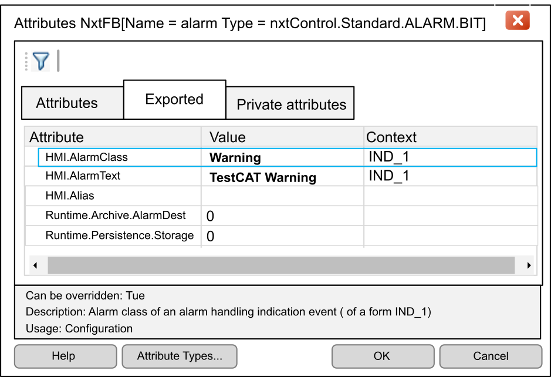
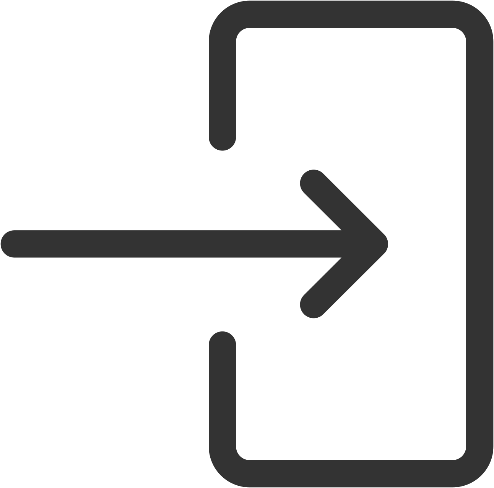
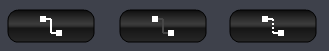

2. Graphics Editor Toolbar
The graphics editor toolbar contains the elements you can add in the editor.
Not all elements are available for all HMI operating systems. Only elements that are available in the currently selected HMI operating system for the solution are displayed on the toolbar.
If you subsequently change the HMI operating system compatibility of the solution, elements that have been added to the canvas but are not available in that HMI operating system are labeled elementname not supported, where elementname is the element type.
Select the element and drag a line or rectangle of desired size with the mouse left button held down. While creating a multipiece element (such as for example polygon, pipe, etc.) the additional points have to be determined and then the element can be completed by a double-click on the last designated position. Other elements will be created as soon as the mouse button is released after the first action:
-
either the local context menu
-
or directly the Properties pad
-
or the ribbon context menu; this menu is dedicated to relative positioning, and rotation (of texts, simple shapes, ...).
For multiple selection, hold down the Ctrl key.
|
Element |
Description |
|
|---|---|---|
|
Pointer |
This tool is always active. It allows elements that have already been created in the editor to be selected and moved. The properties of the selected element can then be adjusted using theProperties pad. To select several elements in the editor at the same time (Multiselect), drag a rectangle over the elements. The selected elements can then be moved as a group and shared properties adjusted together. |
|
|
Line |
This element creates a straight, point-to-point line at any angle. Line width, color, position and other properties can be adjusted using the Properties pad. To adjust the angle of the line, select it in the editor then move one point of the line with the mouse; the mouse cursor turns into a small, upward-pointing arrow. |
|
|
Rectangle
Rounded Rectangle |
The Rectangle element creates a rectangle. Its settings can be adjusted in the Properties pad. The Rounded Rectangle element has an additional property, Radius, which sets the radius of the rounded corners. |
|
|
Free Text
Label
Asset Tag Text
Asset Tag Label |
The Free Text element creates a text element that can be freely positioned. Font, text color, text size, and so on, can be defined in the properties. The Label element differs from Free Text in having the text positioned within a rectangle. Color and properties (for example add image) of this rectangle can also be defined. Additionally, the frame of the text field can be adjusted and the text can be positioned within the text field as desired (TextAlignment property), and a prefix and/or suffix can be added. The Asset Tag Text element creates a text element that displays the different names (instance name, Asset Tag name and Alias name) of the CAT instance once its symbol is on an HMI online. This element can be freely positioned. Font, text color, text size, and so on, can be defined in the Properties pad. The Asset Tag Label element differs from Asset Tag Text in having the text positioned within a rectangle. Color and properties (for example add image) of this rectangle can also be defined. Additionally, the frame of the text field can be adjusted and the text can be positioned within the text field as desired (TextAlignment property), and a prefix and/or suffix can be added.
NOTE: To have more details about how to use the Asset Tag Text and Asset Tag Label elements, check out the Display Instance name, Asset Tag and Alias Name topic.
|
|
|
Poly Line |
The Poly Line element create a line with any number of deflection points. Double-click to complete the element. The description of the Line element is also relevant for Poly Line. Use the property Closed to draw a the between the start and end points. You can open an editor by a click on the |
|
|
Polygon |
The Polygon element represents a filled and already closed Poly Line. In addition to the properties of Poly Line you can define the brush and the fill style of the element. You can also fill it with an image. |
|
|
Ellipse |
This element serves to create an ellipse in the size of the drawn rectangle. The width and color of the frame, text, brush or filling with an image, etc. can be defined in the properties. |
|
|
Arc |
This element creates a circular or elliptic line. First drag a rectangle with pressed left mouse key to define the diameter of the arc line. At the position where the mouse key is released the start point of the Arc is set. The length of the line can be set by defining the end point of the Arc with a further click. Color, line width, position, etc. can be adjusted within the properties. Also start and end point whereas the following applies: the upper position, the vertex has value 270, at the right is 0, rotating clockwise. The properties RadiusX and RadiusY can define the run of the curve, or you can also move the respective endpoint of the curve with the mouse to the desired position. |
|
|
Pie |
This element is the filled counterpart to the Arc. The procedure to create a Pie is identical to creating an Arc. In addition the properties have some settings for brush and filling with an image. |
|
|
Pipe
Pipe T
Pipe + |
The Pipe element visualizes a pipe connection graphically on the HMI. To create a pipe, select the icon from the toolbar, press the left mouse button where the start point has to be set, draw a line with pressed left mouse key and release the mouse key at the position where you want the second point to be set. Each additional click of the mouse creates another point of the pipe connecting the point that was last set. Double-click to set the last point of the pipe and complete the element. It is then displayed in the defined color and width.
Individual points can now be moved to another position by selecting the element and moving the mouse to the respective point until it turns into a small arrow. The point can then be moved with pressed left mouse button to the new position or you can use the context menu entries Add Point or Remove Point after a right-click on the element to remove the selected point or create another one. Alternatively, you can click the A description of the PointF-Collection-Editor can be found beneath this table. Use the arrow to change to the element Pipe T or Pipe +. Select the respective icon from the toolbar and drag a rectangle of the desired size. The element Pipe T will be created standardly lying, the middle connector pointing upwards. In order to rotate the T-piece to the desired direction, adjust the value at item Angle in the properties of the element. The values 0, 90, 180 and 270 are supported.
NOTE: Choose even-numbered values for the size of the rectangle while creating a Pipe T or Pipe +. In that way the scaling of the width of the pipe will fit the width of the adjoining pipe and no offset occurs.
|
|
|
Drawn Button |
This element serves to create a button of any size. Color, text, etc. can be adjusted in the properties as well as text color in pressed state to make a click on the button visible. |
|
|
Two-State Button |
This Element serves to create a switch button of any size, which remains in the last state after a mouse-click. Color, text, etc. can be adjusted in the properties as well as the brush and text color in pressed state and various texts for pressed or non-pressed state of the button, to make the state of the button visible. |
|
|
Combo Box |
The Combo Box represents a selection box. The currently selected option is displayed in the field. The arrow button serves to open the list of the possible options at runtime.
The visual representation (color, font, etc.) can be adjusted in the properties. At item Misc -> Items a click on the Use the SelectedIndex property to define the option, which will be active at project initial startup. This property value is set accordingly, when another option is selected from the combo box at runtime via HMI. You can also use the source code to query or set this value. |
|
|
List Box |
The List Box represents a selection box. Unlike a Combo Box the options are constantly visible at runtime provided there is enough room in the window. If there are more entries than the window can show at once, a scroll bar will be created automatically. However, the currently active option is not identifiable in the list box. The same procedure applies to the List Box as described for the Combo Box. |
|
|
Text Box |
The Text Box offers a text field which can be used to display text (see Label) and as a text input field as well. The visual appearance of the Text Box can be adjusted in the properties (background-, frame- and text color, font and alignment, suffix, prefix, display format, decimal places, etc.). |
|
|
Group Box |
This element principally corresponds to a Rounded Rectangle that can be used as a container for a group of elements. Basically you could also use a Rounded Rectangle for this purpose. However the Group Box can be configured in such a way to let mouse events pass to the next shape beneath it, using the property IgnoreMouseEvents. It is the meaning of the group box, that each element, belonging to this group, can be moved in common.
|
|
|
Tab Control |
This element serves to make the content of several CAT_symbols available from within a faceplate or another CAT_symbol of the same CAT and use its features.
Example: Imagine a CAT that contains three CAT_symbols and a faceplate. Create an element Tab Control in the faceplate. In the properties, at item Misc/TabPages, you can open an editor by a click on the |
|
|
Tracker |
Tracker offers a control element to make the value of a number type variable (REAL, LREAL, INT, SINT, DINT, LINT, UINT, USINT, UDINT, ULINT) graphical visible via slider and it enables the user to set the value of the variable via HMI at runtime, by moving the slider element 'TrackHandle'. Drag a rectangle of the desired size after selecting the icon from the toolbar. Define the orientation of the tracker ( vertical or horizontal ) in the properties. The length of the tracker can be adjusted, the width of a horizontal tracker, or the height of a vertical tracker is set automatically, depending on having ticks and text active or not. Use the properties to adjust the visual representation of the element. The display format of the value (if ShowValue = True) can be set via property LabelFormatString; e.g. {0,0:F2} shows 2 decimal places, {0,0:F0} shows no decimal places, etc.; there is also a more user friendly way to set the format: 0 → shows no places after decimal point 0.0 → shows one place after decimal point 0.00 → shows two places after decimal point, etc. |
|
|
Round Knob |
Round Knob offers a control element like tracker. However it is in form of a rotary button. In order to create this element, select it in the toolbar and drag a rectangle of desired size within the editor. Use the properties to adjust the visual representation of the element. The display format of the value (if ShowValue = True) can be set via property LabelFormatString; e.g. {0,0:F2} shows 2 decimal places, {0,0:F0} shows no decimal places, etc.; there is also a more user friendly way to set the format: 0 → shows no places after decimal point 0.0 → shows one place after decimal point 0.00 → shows two places after decimal point, etc. |
|
|
Value Setter |
Use this element to send several values (e.g. from different text boxes) in common, instead of sending each value, which is edited into a text box and committed with enter, separately to the controller. This can be used, for example, to set parameters. The values will be passed to the controller together by a click on the provided button and at the event output, which is connected with the data outputs, will be triggered only one event. Using the value setter: It is used mainly in faceplates. Drag the output variables of the CAT_HMI function block into the faceplate and choose e.g. TextBox.
NOTE: Select HMIBaseSymbols as active HMI library. In order to do this, execute a right-click on the project node, open and set the checkmark at HMIBaseSymbols.
Drag element Value Setter into the faceplate. You get an element which is invisible at runtime and represented by a rectangle positioned below the faceplate at engineering time. This element has by default the name Execution ValueSetter, which can be adjusted arbitrarily. In the Properties pad of the TextBox, click on and then select the wanted execution value setter from the drop down list.
NOTE: Setting the ValueSetter property automatically set the FireEvent property value to False. It is done so no event is triggered when an input of the TextBox is committed with enter.
 Additionally, create a button (in the image Save Values) which can be used to cause the transmission of the values. Create an event handler by a double-click on the button and supplement the source code as shown below: Further on, a second button (in the image above button Cancel) can be used to cancel the transmission of the edited values (that means in the text boxes committed with enter, but not sent) and to reset the values of the text boxes to the values used before. Supplement the source code as shown below:
NOTE: In this use, the value has to be confirmed with Enter in any case after it has been typed into the TextBox. The value is displayed then in the color which is defined in the properties under ValuePendingColor (see picture above). Only then the value can be committed by ValueSetter (that means button Save Values in the upper image).
|
|
|
Trend
History Trend |
Both the Trend and History Trend controls present data over a specified time period:
The Trend control is useful only in Symbol Editor or Faceplate Editor, because if you want to get a value trend the respective value has to be dragged into the element via drag&drop and for this purpose the interface editor has to be available in the editor. (See Symbol Editor. In Canvas Editor or Graphic Shape Editor there is no interface editor available.) Trend serves to create an element to make visible how the values changes over time. Trend shows the current state of the variable over a definable time span up to the current point in time. In that way the trend of the value changing within the defined time span is displayed graphically as a trend line. In order to create this element, select it in the toolbar and drag a rectangle of the desired size. Use the property TimeSpan to define the time span to be shown in the properties. The maximum time span for trend is 23:59:59 (HH:mm:ss). NOTE: In order to adjust the colors of the trend, use Themes (see Themes at Distributed PAC Project Context menu). This way, you get an optically useful result by switching to a different scheme. In the properties of the trend three properties BackgroundColor, TrendLegendColor and TrendLegendFontColor are coated with the corresponding brush definitions. Even with these properties, adjust the assigned brush definition via schema instead of direct property editing. Furthermore, there are some additional colors which can be adjusted to the respective needs. In that way the appearance of the trend can be custom designed. Use the History Trend control to display archived data that is presented according to the settings in a history trend configuration file. You can create and edit history trend configuration files using the History Trend Manager. When you run a canvas containing the History Trend control - either in an HMI client or by using the Start Local HMI command - you can display the archived values for one or more selected variables over a specified time period. Use the toolbar commands to adjust the display during runtime:
 From left to right, above, the icons are as follows: |
|
|
Icon |
Description |
|
|
Configuration |
Opens the History Trend Manager (refer to the HMI - User Guide topic History Trend Manager)., where you can select, duplicate, and edit a configuration and dynamically apply it to the current display. |
|
|
Archive List On/Off |
During runtime for an unlocked configuration, this opens the Add Pathes to Trend dialog where you can add variables to the current history trend configuration, or clear the list. |
|
|
Legend On/Off |
Toggles the legend display on and off. |
|
|
Zoom Time Out |
Displays the trend in larger time increments. |
|
|
Zoom Time In |
Displays the trend in smaller time increments. |
|
|
Unzoom |
Clears the zoom in or out, and restores the default time display. |
|
|
Cursor On/Off |
Opens both a vertical line showing a specific trend data point, plus a window that can present the variable name, date and time point, and the data value. |
|
|
Set start time and range |
Opens the Set Time and Range dialog, where you can adjust the Start Time (mm.dd.yyyy hh:mm:ss) and the subsequent Time Range (D,H,M,S) to be displayed. |
|
|
Series Properties |
Opens the Series Properties dialog, which displays a list of available configuration variables and the parameters of the selected variable. |
|
|
Change Current Configuration |
During runtime for an unlocked configuration, this opens the History Trend Manager dialog (refer to the HMI - User Guide topic History Trend Manager) and lets you edit the currently displayed configuration. |
|
|
Configuration Save |
During runtime for an unlocked configuration, this saves the current configuration file, including changes made. |
|
|
Configuration Save As |
Saves the current configuration to a new file, including changes made. |
|
|
|
Opens a Print Preview dialog, where you can view the graphic display of the configuration for printing. |
|
|
Date and Time Picker |
Date and Time Picker offers an input field at runtime that serves to select a certain date from a calendar, somewhat similar as with a Combo Box. The calendar can be opened by the small arrow button or you can edit the date and, if necessary, time directly into the field. The visual presentation and the behavior can be defined in the properties. |
|
|
 Data Grid |
The element Data Grid displays a table with the desired number of columns and rows. For that purpose the element is created at design time by dragging the icon from the toolbar into the editor and stretching the rectangle to the desired size. At design time only an empty rectangle is shown, without any fields inside:
 In order to display the data fields, respectively the columns and rows, at runtime, the source has to be prepared. For this purpose a button has to be created, for example, as shown in the image above. That button enables us to make the desired number of columns and rows available within the data grid element at runtime. Example for the source code: To implement the Data Grid element here, the same options can be used as they are available for Data Grid View in C#. In our example, clicking Add data fields adds the respective number of columns and rows in the grey rectangle. Each further click adds the same number again.
 |
|
|
Alarm Grid
Execution Alarm
 Alarm Frame |
The Alarm Grid element offers a platform to show alarms on the HMI in form of a list. Select the icon from the toolbar and drag a rectangle of the desired size in the drawing area. The widths of the columns are predefined at design time, but you can adjust them at runtime. The element Alarm Grid shows alarms, being sent from respective CATs (such as e.g. engine control, pump control, etc.) which are used in the project. That means, that some particular CATs, which are instanced in the project from ready-to-use libraries, do have the functionality to send alarms readily implemented. The only thing the user has to do is to create an Alarm Grid control for the HMI and the alarm messages of the used CATs are shown automatically at runtime.
The following icons allows to filter or acknowledge alarms:
NOTE: For more information on how to acknowledge alarms refer to the topic Acknowledging Alarms.
|
|
|
Column |
Description |
|
|
SC |
Shows the state of the alarm:
Further on the message can be shown as warning or alarm. A warning is displayed yellow, an alarm red. Use the attributes to define whether to show a warning or an alarm.
 At HMI.AlarmClass column Value the following entries are supported: Alarm, Warning At HMI.AlarmText column Value a descriptive text can be edited, which is shown unchanged in Alarm Control Panel at column Text instead of Present (see beneath), when this alarm occurs. |
|
|
Ack |
This column serves for acknowledging the message via click in the field or touching it (Touchscreen). !!! shows, that the message is new and not yet acknowledged. X shows, that the message has been acknowledged. As soon as a gone alarm is acknowledged the entry disappears from the list. Only up-to-date messages are shown. |
|
|
Origin |
This column shows the origin of the alarm through each instance, e.g. Device.Resource.FunctionBlock. |
|
|
Text |
The text which is shown in this column can be defined within the attributes. The standard text reads Present; replace it with significant text. |
|
|
Came |
This column shows date and time when the alarm was triggered. |
|
|
Gone |
This column shows date and time when the alarm was reset. |
|
|
Present |
True as long as the alarm is active, False as soon as the alarm is reset. |
|
|
State |
This column shows the state of the alarm. these states are possible: CameNA: triggered alarm, not yet acknowledged. Came: triggered alarm and already acknowledged. GoneNA: reset alarm, not yet acknowledged. |
|
|
Value |
1: triggered alarm 2: reset alarm |
|
|
Info |
This column shows the value directly, which can be set at the data input INFOVAL of the function block ALARM_BIT (See beneath). This value can be predefined as a constant in ready-to-use libraries, or it can be led out for example in a faceplate for parameterizing it with a significant value using a Text Box. It serves as an assistance to make it easier for the user to assign the message. |
|
|
A double-click in a row of an active message in the Alarm Grid control at runtime opens the window AlarmDetailDlg. This window shows detailed information about the selected message. To create a CAT that can send an alarm message you have to use the ALARM_BIT function block from the library SE.Standard. This function block represents the connection to the Alarm Grid control. The function block requests, after initialization, the state of the input variable 'INP' when the Event input 'REQ' is triggered and sends any alarm message to the Alarm Grid control. The input variables 'TYPE', 'ACKTYPE_1' and 'ACTIVE' have to be provided with the relevant constants. (Constants can be set via right-click on the data label of the data port.) The event input ACK_C1 is triggered by acknowledging the alarm as described above. The event input ACK_G1 is triggered by acknowledging the reset alarm. Additionally these event inputs can also be connected within the project (resp. CAT) to have an alarm, which is triggered for example from a dirty filter acknowledged automatically by changing the filter. For further information about the ALARM_BIT function block please refer to the documentation of the function block in the library SE.Standard (select the function block in the project and press F1). The Execution Alarm creates an element which is invisible at runtime. It can be used to show for example only a specific part of the alarm message on the HMI, using a respective Event Handler (lightning symbol in the Properties pad) and C# code. Example: Using the example as shown above, you can display that part of the alarm message, which is also displayed in column Text in the list element Alarm Grid control, separately within a text box (tbAlarmTest). Relevant Event Handlers: OnAlarmChange, OnInitialize NOTE: It is possible to simultaneously reload the collection of active alarms together by means of a reset button. This may be useful when if the display of individual alarms occasionally is not updated. To do this, insert a button from the toolbar into the faceplate, where the alarm list is implemented, create an event handler by double-clicking on the button and insert the code stated below: The Alarm Frame is used in conjunction with a symbol to highlight the symbol border with a color when an alarm arrives for that symbol. When an alarm arrives for a symbol and that symbol is used inside a canvas or a faceplate, a blinking colored rectangle is displayed around the symbol. |
||
|
Diagnostics Grid |
The Diagnostics Grid is a graphical tool that, once added in a canvas and opened online, shows the current diagnostics of the different Soft dPAC devices in the project. The Diagnostics Grid is organized as followed: It has several columns, each giving a specific information:
In the Diagnostics Grid, each line and all its information belongs to a specific device. Thus, all these previous elements are then indicated for each device. If the user needs detail information for a specific device, then open Diagnostic details window by:
In this Diagnostic details window is given the following information:
These are all the information given with the Diagnostics Grid. In addition, there are few options given to the user to find specific device diagnostic inside the entire grid:
|
|
|
Symbol Panel |
This element serves to make the content of a CAT_symbol available from within a faceplate or another CAT_symbol of the same CAT and use its features. Example: Imagine a CAT that contains two CAT_symbols and a faceplate. Create an element Symbol Panel in the faceplate. In the properties, at item Misc/Symbol, you can open a drop down list by a click on the |
|
|
WorkArea Control
Canvas Topology Breadcrumb
Canvas Topology Rose
Canvas Topology Panel
Change Canvas Button
Exit
 Login
Current User
Language Switcher
New Version deployed
Help |
These elements are already used within the Start Canvas. That means, if you use the Start Canvas as predefined, the elements are already arranged in the header of the canvas ready for use. WorkArea Control offers a work area, such as the area in the Start Canvas where the currently active canvas is shown. Canvas Topology Breadcrumb offers an element to switch between different canvases. Canvas Topology Rose offers an element to switch between different canvases. Canvas Topology Panel contains the buttons to select a canvas directly. For each canvas, which is available in this HMI, a button will be created here at runtime. Change Canvas Button creates a button which contains the property Misc/CanvasName. Here you can edit the name of the canvas which you want to be opened by a click on this button at runtime. The element Exit creates a button to exit the HMI. Login creates a button that allows a user to log in, respectively to change to another user profile (see User Management). Current User creates a label to show which user is currently active. Language Switcher offers a button to switch the language at the HMI, provided that the project has been prepared accordingly. That means the dictionary for multilanguage needs to be created in the project (Refer to the topic Multilanguage Dictionaries. New Version deployed offers a button that can be configured to deploy the specified configuration. Help offers a button that can be configured to open a help file. |
|
|
Runtime-Connection |
Runtime-Connection creates a button, which displays the current connection state of the devices existing in the project. On one hand this is done symbolically by the display style of the connection line shown on the button:
 1. If all devices are connected and in state 'Running', standardly a continuous white line will be shown on the button, whereas the color of the line can be adjusted individually (Properties: ConnectedColor → It is recommended to adjust the color with Distributed PAC Project Context menu > Theme while assigning another color to the named color RuntimeConnectionConnected ). 2. If no device is connected standardly a continuous gray line is shown (color is also definable: NotConnectedColor → RuntimeConnectioNotConnected) 3. If a part of the devices is connected a dashed line will be shown at runtime, consisting in the colors of the two above mentioned cases. Further on, by a click on the button detailed information can be requested. A window Info opens and shows runtime connections and database connections as well, if an archive server is established and connected with the project: This window can also be opened at runtime of the HMI pressing key F1. |
|
|
Log State |
This element serves to create a button to visualize the state of the HMI runtime log in color. The colors are defined standardly like this: white - normal or no state, red - detected error state, yellow - warning. The colors can be adjusted via properties, respectively better via Distributed PAC Project Context menu > Theme (named Color: LogStateNone, LogStateError, LogStateWarning).
A click on the button at runtime of the HMI opens the HMI runtime log (which can also be opened by pressing the key F2 at runtime of the HMI. |
|
 button at Points within the field (Collection) to move the points via coordinates or create or delete some points. For more information, refer to the Pipe element below.
button at Points within the field (Collection) to move the points via coordinates or create or delete some points. For more information, refer to the Pipe element below.
 ): This option is used to acknowledge only the alarms currently visible in the alarm grid.
): This option is used to acknowledge only the alarms currently visible in the alarm grid.